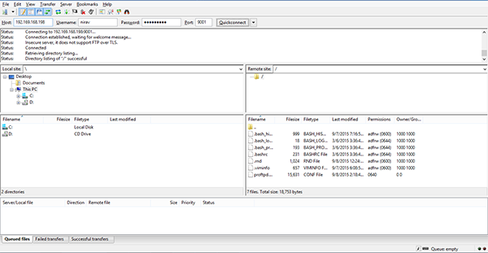

Configure ProFTPd to use SFTP instead of FTP on Arch Linux, security, Linux basics.
Configure ProFTPd to use SFTP instead of FTP - Arch Linux
Difficulty: 1
Time: 20 minutes
ProFTPd is a File Transfer Protocol (FTP) server and open source software compatible with Linux/Unix systems and Microsoft Windows. SFTP (which stands for SSH File Transfer Protocol or Secure File Transfer Protocol) is a separate protocol packaged with SSH that works in a similar way over a secure connection.
In this article, you will learn to install and configure ProFTPd on Arch Linux.
You need sudo privileges to run the commands.
Install the essential library
- Install the C library and
make command.
sudo pacman -S gcc make
Install ProFTPd
- Download the source ProFTPd.
sudo wget ftp://ftp.proftpd.org/distrib/source/proftpd-1.3.6rc1.tar.gz
- Extract the package, and change the directory to ProFTPd.
sudo tar -xf proftpd-1.3.6rc1.tar.gz
cd proftpd-1.3.6rc1
- Install ProFTPd.
sudo ./configure
sudo make && sudo make install
- Install the sample configuration file.
sudo sh sample-configurations/PFTEST.install
- Open the file
/tmp/PFTEST/PFTEST.conf for editing.
sudo vim /tmp/PFTEST/PFTEST.conf
- Set the user and group as
nobody, and set the document root to access the default directory as shown below.
User nobody
Group nobody
DefaultRoot /home/user !adm
- Save and exit the file by pressing the Esc key and then typing :wq, followed by pressing the Enter key.
Configure ProFTPd
- Open the
PFTEST.conf file for editing.
sudo vim /tmp/PFTEST/PFTEST.conf
- Change the
ServerName to your FQDN or your public IP.
ServerName “Your-public-ip”
Add the port below the DefaultServer variable label.
- Change the default server port to hide from public scan.
Port 2021
- Start the ProFTPd services.
For non-daemon:
sudo proftpd -n -d 5 -c /tmp/PFTEST/PFTEST.conf
For daemon:
sudo proftpd -d 5 -c /tmp/PFTEST/PFTEST.conf
Test ProFTPd
- Open FileZilla or another SFTP or FTP client such as WinSCP.

- Enter Host (or IP address), Username, Password and Port number, and click Quickconnect. FileZilla connects automatically using your SSH keys.
Conclusion
In this article, you have learned to install and configure ProFTPd on Arch Linux.